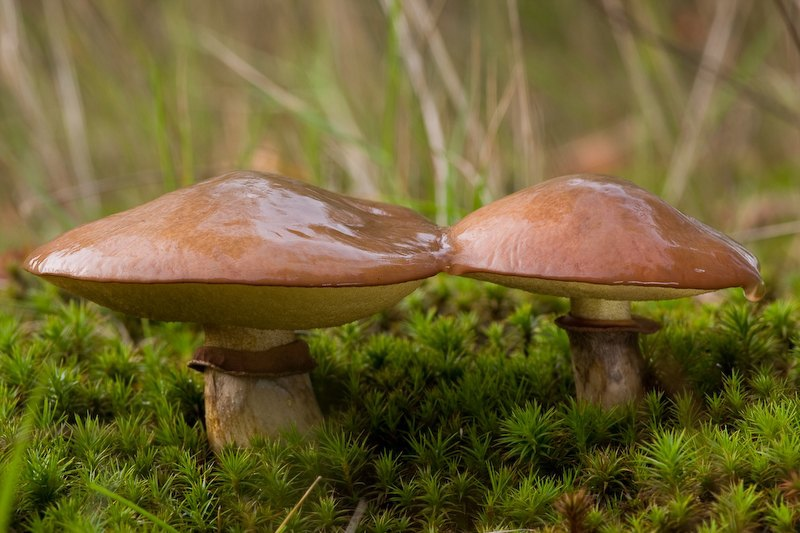

Масленок обыкновенный (съедобен)

Информация
- ШЛЯПКА: полушаровидная, слизисто-маслянистая, в сырую погоду обильно покрыта слизью, в сухую погоду блестящая, шелковистая, желтоватого-коричневого цвета. Края шляпки соединены с ножкой белой пленкой, которая с возрастом разрывается. Нижняя поверхность губчатая, светло-желтая.
- НОЖКА: цилиндрическая, плотная, желтоватая.
- МЯКОТЬ: белая, мягкая.
- СПОРОВЫЙ ПОРОШОК: желто-охряного цвета.
- РАСТЕТ: в хвойных лесах под соснами с середины июля до середины сентября.
- УПОТРЕБЛЕНИЕ В ПИЩУ: пригоен для варки, жарки, соления и маринования. Для сушки непригоден. При обработке кожицу со шляпки следует снять.
- ЯДОВИТЫЙ ДВОЙНИК: не имеет.